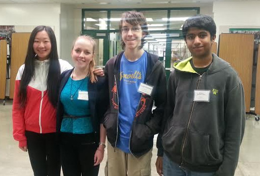

Women, people of color, people of non-normative sexualities, people of disabilities: All are grossly underrepresented in media today. Representation Tomatoes challenges the erasure of oppressed groups in society. Movies are ranked by you and for you, so you can choose what you want to pay $12 to see.
See all user reviews.
Most recent:
People of Color and Minorities play an important role in representing a cohensive society. Films without these people fail in this sense, and also in combating the institutional racism associated with hiring actors and actresses of color.
Films that represent POC and minorities well:
It's difficult to find films that represent people with disabilities well. However, representation is important in making all people feel included and accepted as normal in society. Because of this, further efforts should be made to include people with disabilities in film and media.
These films represent people with disabilities well:
These films have been reviewed as being the most successful in their representation of a wide variety of people:
Women make up over 50% of the world's population and yet make up only about 30% speaking characters. It is vital for film and media to equally represent women and men in film and entertainment; however, blatant sexism still seems to be a popular videographic device.
These films represent women well:
LGBT people, now more than ever, must receive appropriate representation in film and media. As the struggle for equal rights heightens, acknolwedgement, not erasure, should be the forefront in entertainment.
Films that represent LGBT people well:
Representation Tomatoes was created by a group of high school students from Oregon during the PilotPDX hackathon. Concerned with social justice and ready to code, Lucas, Patricia, Abhinav, and Minjin created Representation Tomatoes. It's a way to rate films based on their representation of women, minorities, people of color, people with disabilities, and LGBT people based on quality (if representation exists at all!)

Minjin, left, goes to Health and Science and is a sophomore. Patricia goes to Riverdale High School with Lucas, who is standing beside her, and both are juniors. Abhinav, furthest to the right, goes to Sunset High School. The team has a variety of experience levels, mostly in HTML and CSS.